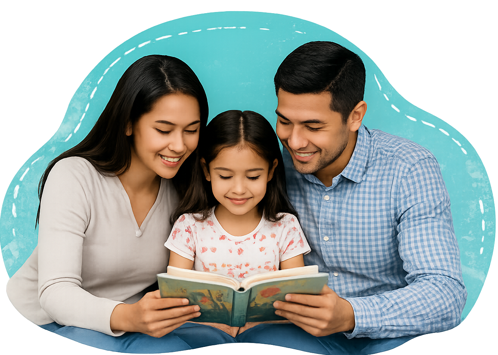

Family Connection
Family Connection
Build joyful literacy routines using stories, conversation, home languages, and everyday experiences.
I can read, talk, and learn with someone in my family.

Story Night
Take turns reading, listening, or retelling in any language.
Family Interview
Ask about a childhood memory, tradition, journey, or place.
Everyday Literacy
Read recipes, signs, messages, directions, menus, and labels.
Family Reading Bingo
Read somewhere cozy
Tell a family story
Learn a new word
Read in two languages
Draw your favorite part
Ask a “why” question